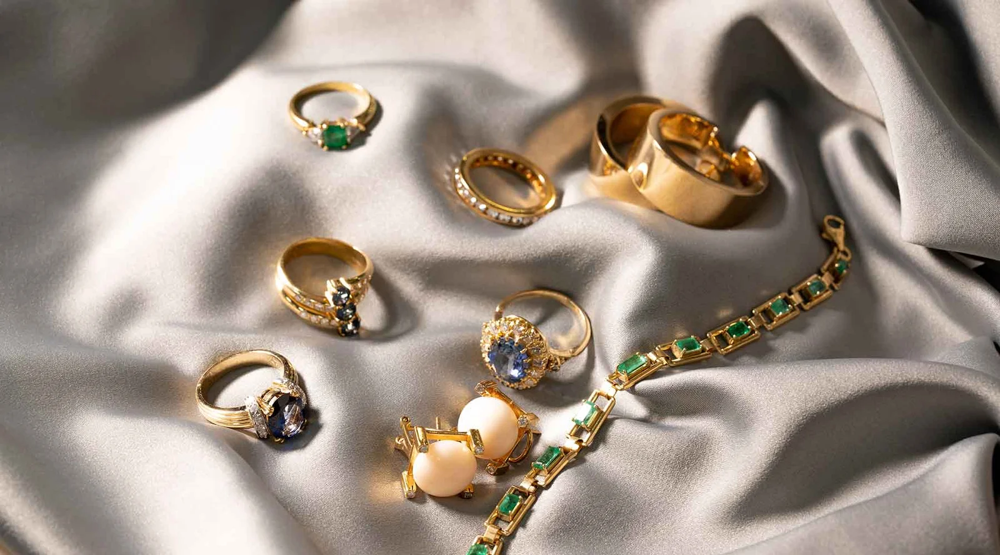
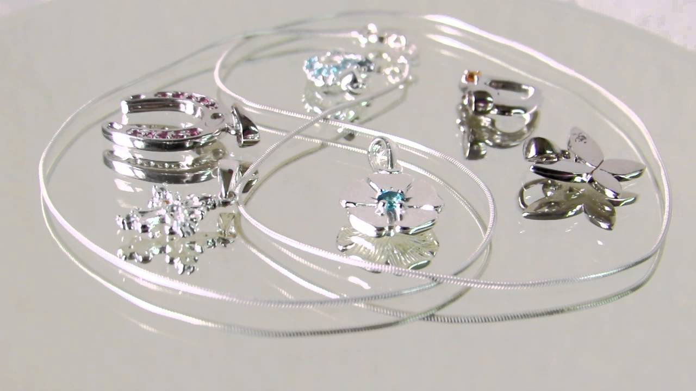
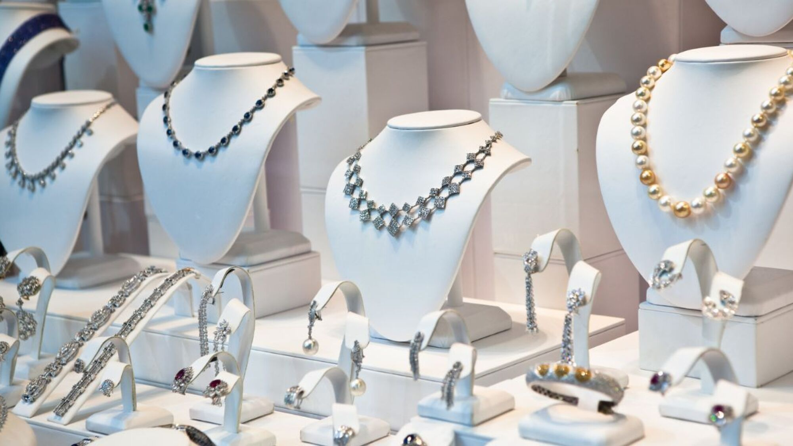

Joyas Lujos Moda
El oro es sinónimo de lujo atemporal. Sus tonos cálidos iluminan la piel y aportan un toque sofisticado a
cualquier estilo.
Desde cadenas delicadas hasta anillos con carácter, las piezas de oro se convierten en protagonistas sin
esfuerzo.

La plata destaca por su frescura y versatilidad.
Su brillo frío combina con estilos modernos, urbanos y minimalistas.
Perfecta para quienes buscan elegancia sin excesos.

Combinar oro y plata ya no es un tabú: es una declaración de estilo.
La mezcla de tonos crea un look dinámico, moderno y lleno de personalidad.
